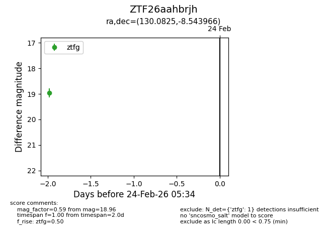
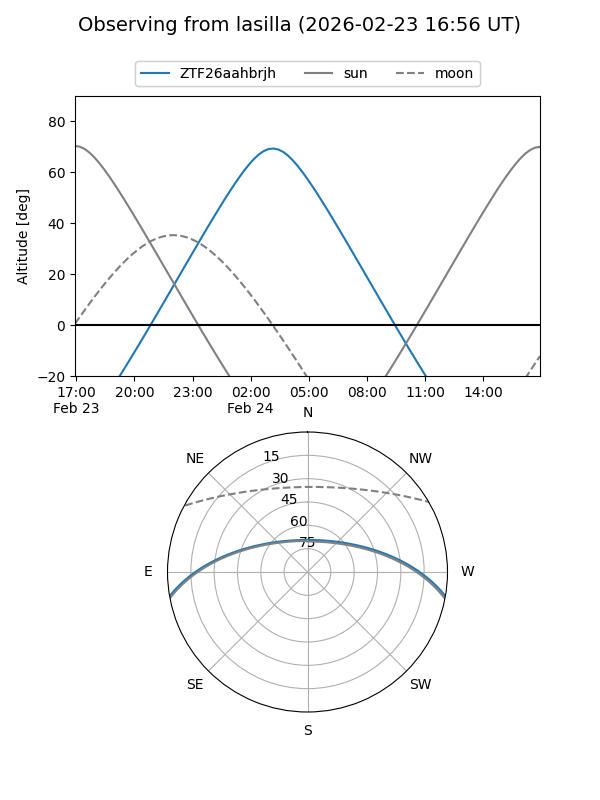
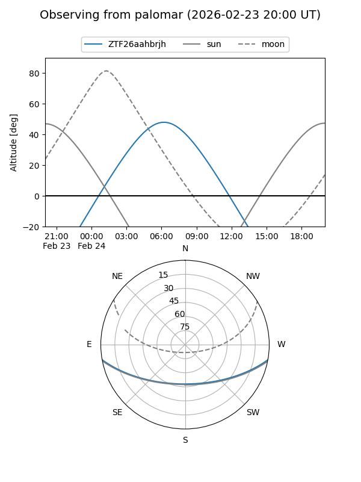

ZTF26aahbrjh
Target ZTF26aahbrjh at 2026-02-24 09:08
Aliases and brokers:
FINK: link
Lasair: link
ALeRCE: link
alt names
ZTF26aahbrjh (ztf,fink_ztf)
Coordinates:
equatorial (ra, dec) = 130.0825,-8.54397
equatorial (HMS+DMS) = 08:40:19.79,-08:32:38.28
galactic (l, b) = (233.9856,+19.56440)
Flags:
Photometry:
last ztfg=18.96
1 ztfg detections
Lightcurve

Visibility


Additional plots